Plan wycieczki
Zwiedzone miejsca
- Kluczbork
- Opole
- ZOO w Opolu
Czas wycieczki: 2 dni
Skład osobowy: 2 dorosłych
Punkt początkowy i końcowy: Sułkowice
Na każdą naszą rocznice staramy się znaleźć trochę czasu, który możemy spędzić we dwoje. Mamy szczęście, że nasza rodzina nie ma problemu z zostaniem z naszą niespełna roczną córką na weekend, więc postanowiliśmy z tego skorzystać i tym razem zobaczyć Opole, które zazwyczaj tylko mijamy jadąc w kierunku Wrocławia. Do tego dołożyliśmy sobie Kluczbork co okazało się ciekawym zestawem na weekend.
Zwiedzanie
Kluczbork
Naszą podróż rozpoczęliśmy od wizyty w Kluczborku. Spacer zaczęliśmy od rynku i okolicznych uliczek, zabytkowych kamienic oraz charakterystycznego ratusza. Następnie odwiedziliśmy Bramę Krakowską czyli jedyną zachowaną bramę miejską, będącą pozostałością dawnych fortyfikacji otaczających miasto. Dziś mieści się w niej muzeum poświęcone historii Kluczborka i okolic. Później wybraliśmy się nad zalew, potem park miejski i finalnie wróciliśmy do centrum miasta.
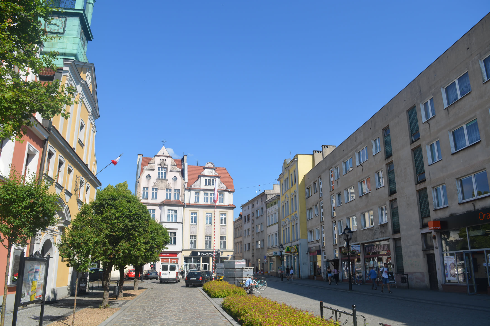
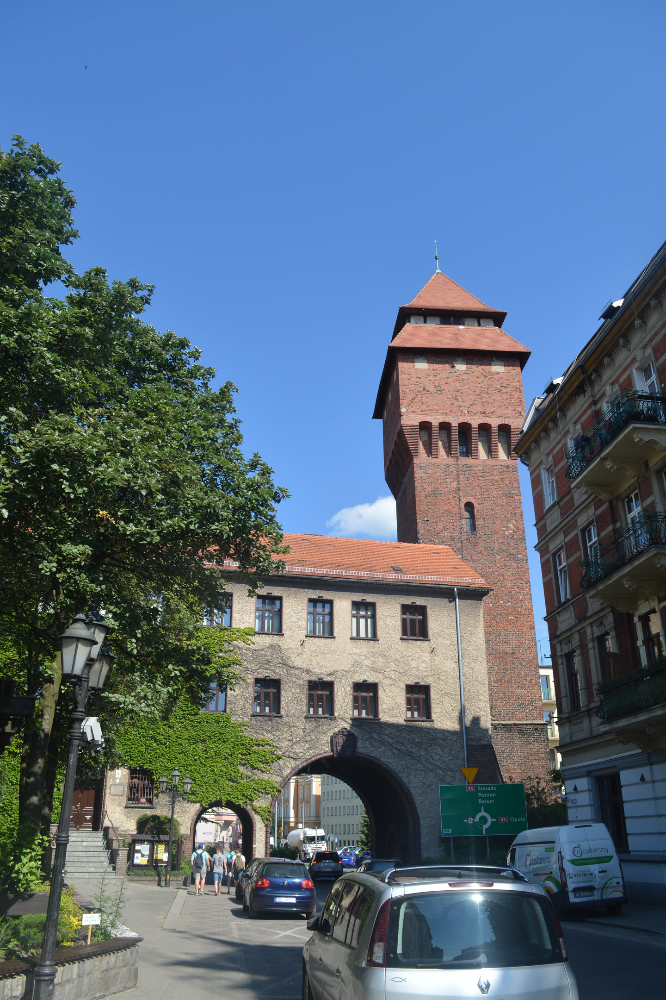
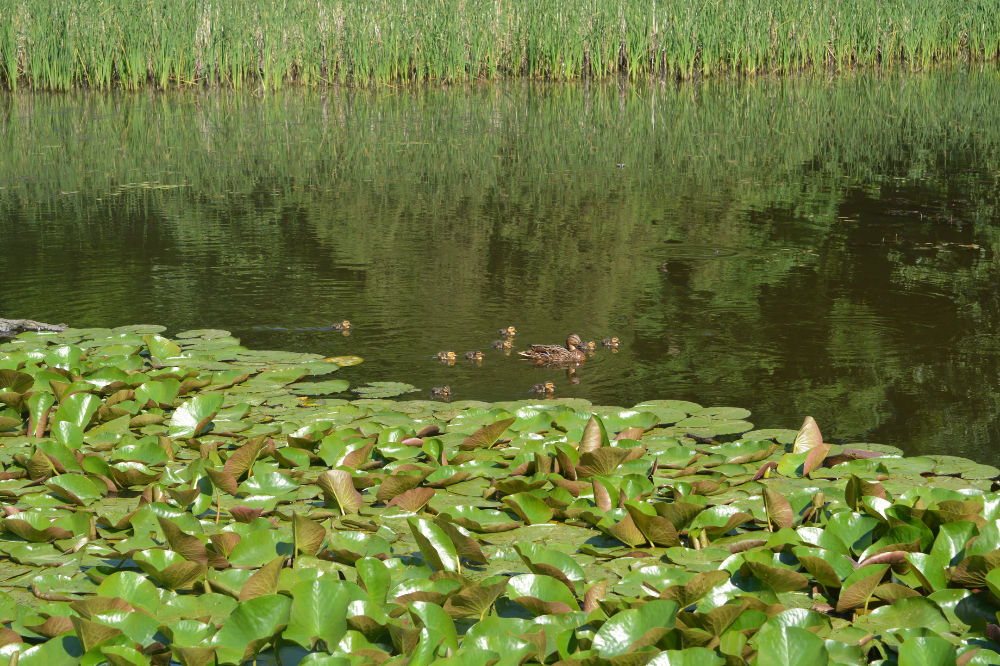
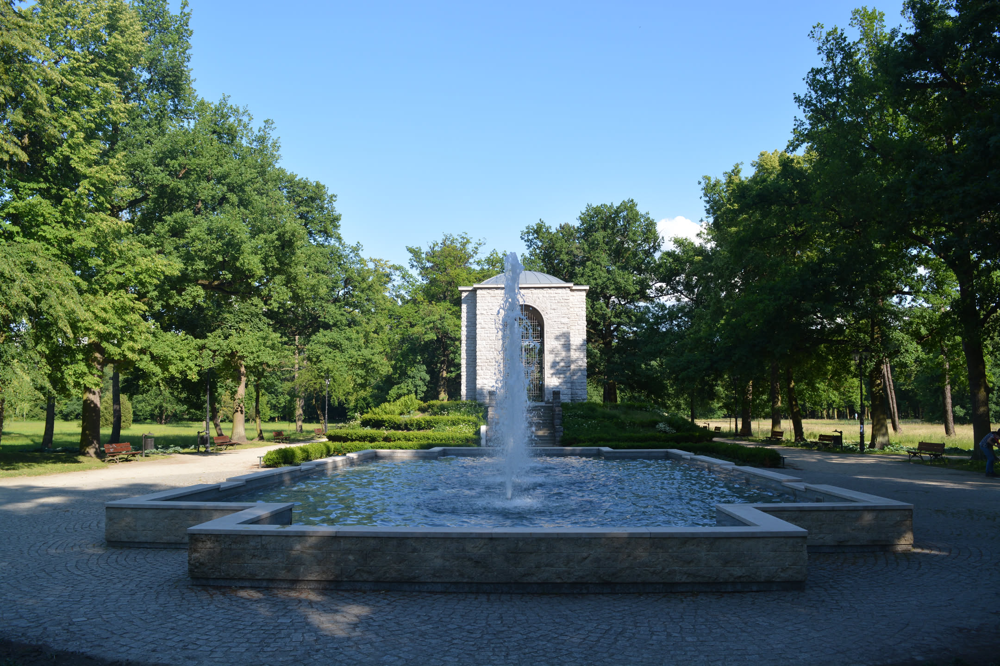
Zwiedzanie
Opole
Kolejny dzień spędziliśmy w Opolu. Zwiedzanie rozpoczęliśmy od spaceru po parkach i bulwarach nad Odrą, a następnie dotarliśmy w okolice amfiteatru i fontanny. To właśnie tutaj co roku odbywa się Krajowy Festiwal Polskiej Piosenki, z którym miasto jest kojarzone od ponad sześćdziesięciu lat. Później przeszliśmy na Wyspę Pasiekę, jedną z najbardziej charakterystycznych części Opola. Spacer po alejkach doprowadził nas do Mostu Groszowego, którego nazwa nie jest przypadkowa ponieważ dawniej za przejście pobierano opłatę w wysokości jednego grosza. Następnie trafiliśmy na rynek otoczony kolorowymi kamienicami. Stojący pośrodku ratusz został zaprojektowany na wzór florenckiego Palazzo Vecchio. Jednym z najbardziej charakterystycznych punktów Opola jest Wieża Piastowska czyli jedyna zachowana część średniowiecznego zamku książąt opolskich. Dziś stanowi symbol miasta i przypomina o czasach, gdy Opole było stolicą księstwa piastowskiego. Odwiedziliśmy także opolską katedrę, której dwie wieże mają aż 73 metry wysokości i należą do najwyższych w Polsce.
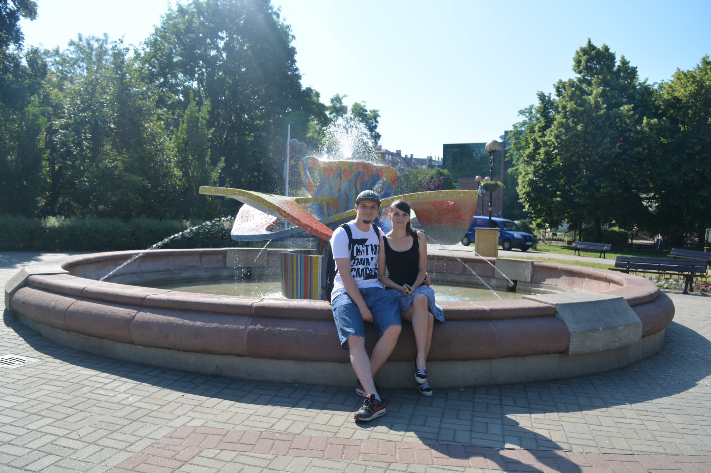
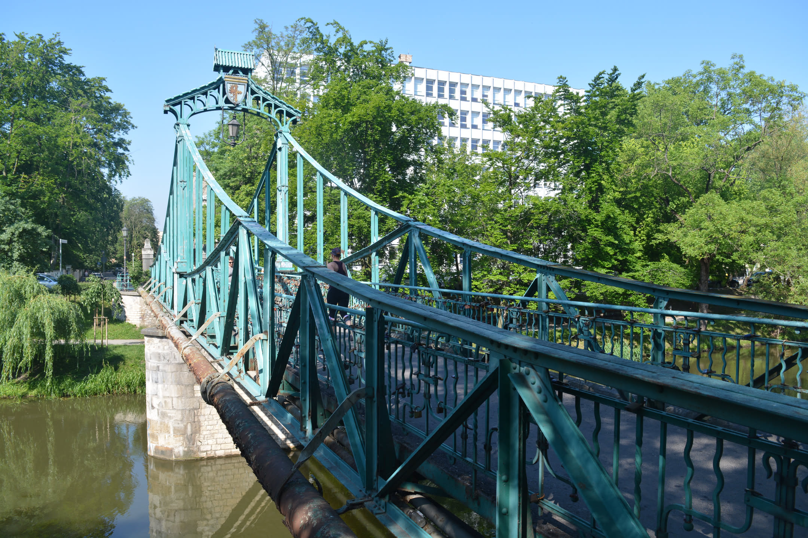
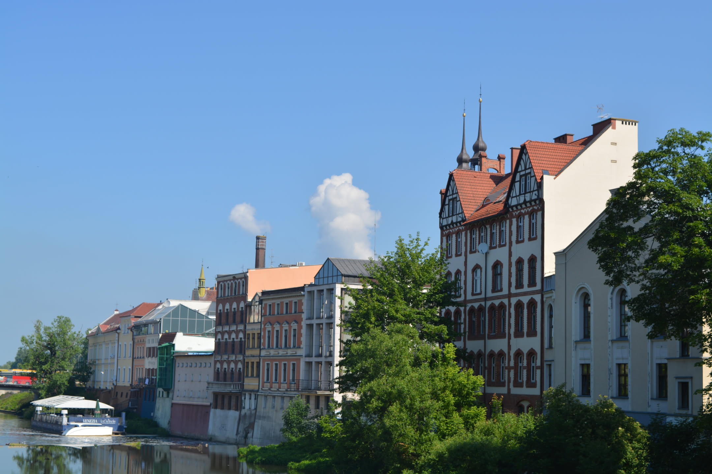
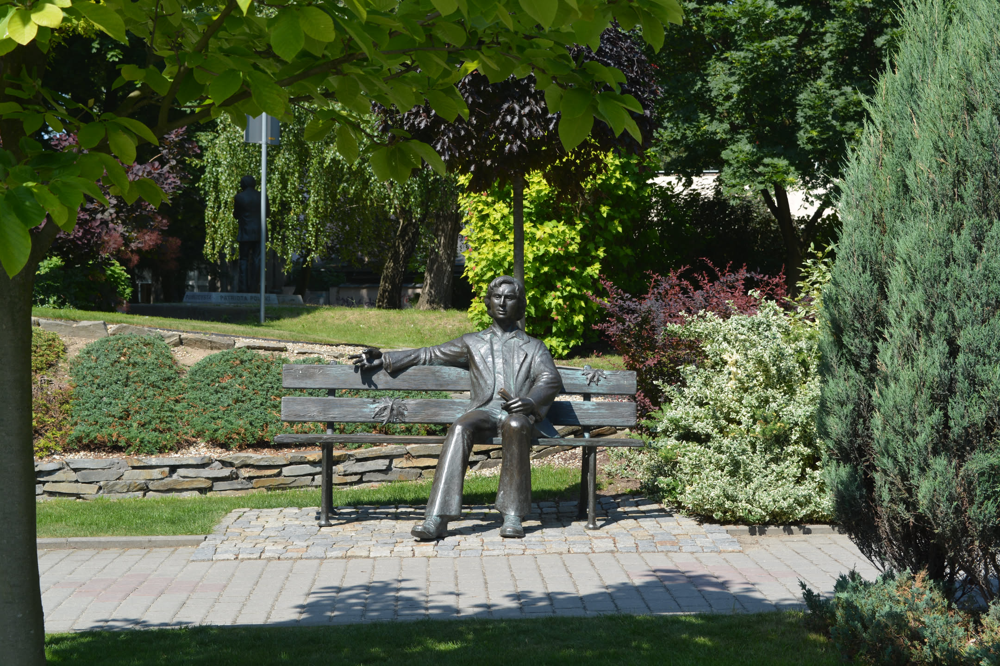
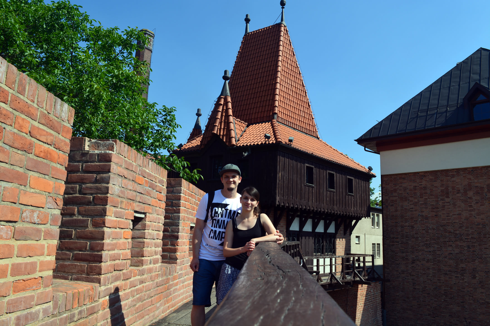
Zwiedzanie
Ogród Zoologiczny w Opolu
Na zakończenie dnia wybraliśmy się jeszcze do opolskiego zoo, które znajduje się na Wyspie Bolko. Ogród zoologiczny należy do największych w Polsce i zamieszkuje go ponad tysiąc zwierząt reprezentujących setki gatunków z całego świata. Opolskie zoo zostało niemal całkowicie zniszczone podczas powodzi tysiąclecia w 1997 roku, ale po odbudowie stało się jedną z najchętniej odwiedzanych atrakcji miasta.
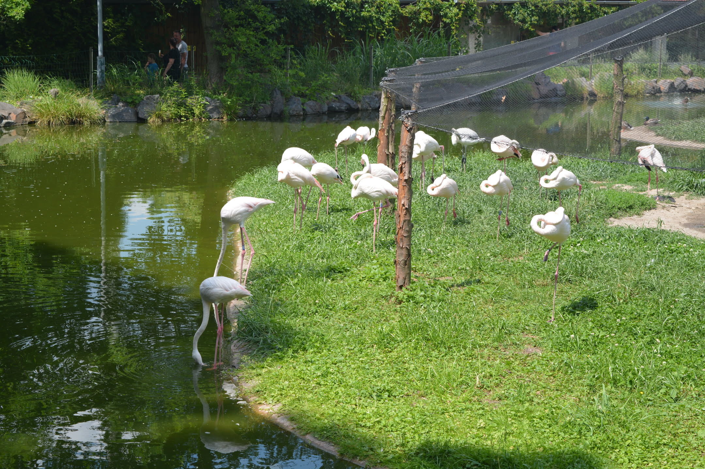
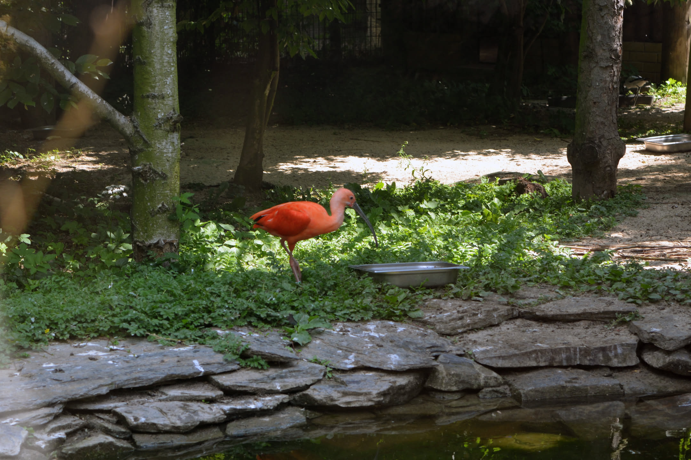
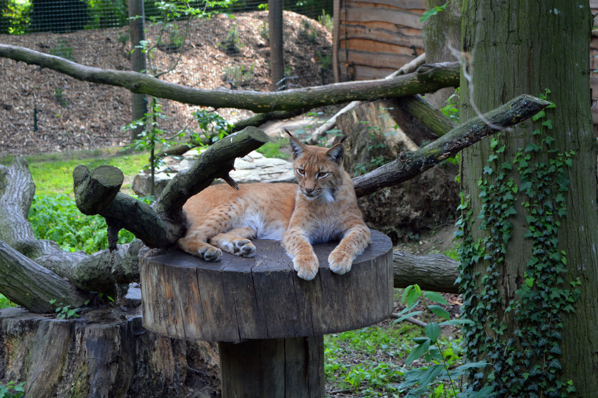
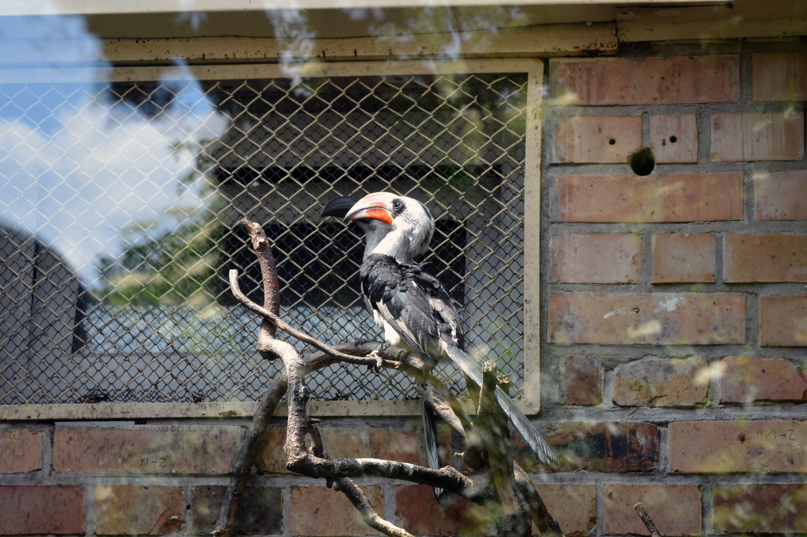
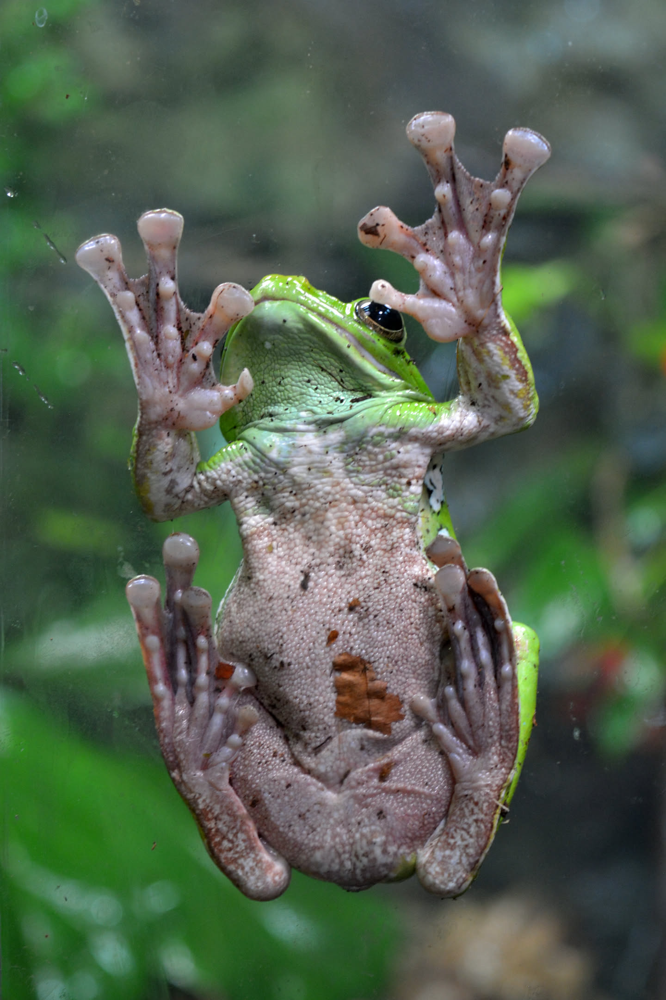